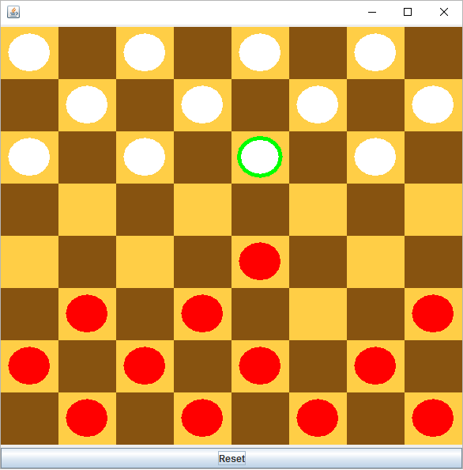

Below is a list of projects that are currently in production or have already been completed. The list runs from most recent to least recent. To get the full effect of finished projects, please download the project which is of interest to you. If for some reason a link does not work, please notify me at: bbeshel@slu.edu
***This is currently a work in progress***
This is a project for Digital
Humanities at Saint Louis University as an extension to the current works for
T-PEN. This is currently being worked on by
myself and Graison Day, a peer at SLU. T-PEN is a tool that is used for scholars to
easily create manifests of scanned images from old manuscripts and transcribe them,
then store them for access on the web through various tools (including T-PEN). We are
tasked with creating a different version of the tool that supports custom shapes that also
contain the ability to link and embed media relating to an annotation a user has made.
Originally, the tool only supported rectangular shapes as annotations. The tool conforms
to IIIF and
OpenAnnotation standards, and will
read in a IIIF Canvas, translate it to a usable and editable set of data on multiple
HTML5 Canvases, and then store the changes on a database in JSON-LD format that complies
with the standards listed above.
This project is written in HTML5/CSS3 and JavaScript, using jQuery, and HTML5 Canvas.
A project I did with Zach Lucas in my web graphics class senior year. We had about 4 weeks to recreate a small version of the game Katamari Damacy, in which you control a ball that rolls around, and as you intersect with objects, your ball picks them up - and consequently grows! Written in JavaScript using the Three.js library for WebGL. Click here to try out Katamari!
Lead God, or Bullet Kin, is a useful page for players of Enter The Gungeon,
a successful rogue-like bullet hell game that I enjoy playing. A friend of mine,
Simon Nguyen, had the idea
to create a page similar to that of another (for another game),
which did the same task: create a page
with images to all of the items in the game, with all of their information, so that
players could search through them easily to discover what they did in-game. He
asked me to assist him in creating the page, and I obliged!
Written in HTML5/CSS3 and JavaScript, using jQuery and Isotope.
Click here to see a live version of Lead God!
Click here to test this project!
This is an alpha version of a now finished project that essentially allows the user to upload an image (or not)
and paint on it. It is written using HTML5's canvas and JavaScript.
Most of the code you see here is starter code provided by
Eloquent JavaScript.
However, I have used this as a jumping-off point so that I can simply modify
the paint environment to add all the functionality my client has requested.
Current modifications include auto-closing a free-drawn path, filling the
path with a transparent, colored field, and resizing the image the user
inputs to the canvas size.
**Note: Due to a Non-Disclosure Agreement, I am not allowed to speak about
the entirety of the requirements. This also means I can't post a more updated version.**
This was a project that I worked on in a group of 4 for my software engineering course.
It is a Google Chrome browser extensions that allows a user to add songs from
YouTube links into their own playlists and save them, and allows continuous
play, pause, seek, and track forward/previous functionality. This is so that
browser users can play audio from their favorite YouTube videos without having
to keep a YouTube tab open or create playlists on YouTube linked to an account.
The extension only loads the needed audio.
Below are some diagrams we were required to make for the course for our
project. Here are some of the ones I made:
Below, in order: Data Flow Diagram, Entity Class Diagram, Use Case
Diagram, State Chart
Data Flow Diagram
Entity Class Diagram
 Structure Chart
Structure Chart
 State Chart
State Chart
 Here is a preview of what the extension looks like in the browser when active:
Here is a preview of what the extension looks like in the browser when active:
 If you would like to try the extension, download the link below.
In Chrome, go to Settings > Extensions, enable Developer mode, and
click "load unpacked extension," then choose the file below.
Click here to download the extension.
If you would like to try the extension, download the link below.
In Chrome, go to Settings > Extensions, enable Developer mode, and
click "load unpacked extension," then choose the file below.
Click here to download the extension.
This was the final project for my Object Oriented Design course. It was
created without any external existing resources - all graphics, classes and code
were created by me.
The game is simple: use the arrow keys to move your character around the map.
You must collect all the keys to open the color-coordinated doors to reach the
green goal. However, the map seems impossible - but it is not!
**Note: I do not have a .jar file of this project at the moment -
in the .rar below, you can see all the .java files associated with the
project. The file runs from the "MazeGame.java" file in an IDE such as
Eclipse.**

Click to download the source files.
This was a midterm project for my Object Oriented Design course. It
involves creation of images using the Graphics package provided in the
JRE, event listeners, and GUI elements. We initially were provided with
the White game pieces, but they could not double jump or king, and the
game could not be reset, until I implemented it.

Click to download the game
.
My earliest project!
This one took quite a bit of self-learning. GUI elements, action listeners, and
stream writers/readers were completely foreign to me during this project,
so much of this was very difficult to me - especially since I had only
a year or so of programming experience in Java. This was completed in 2012.
Click to download the full project with documentation.